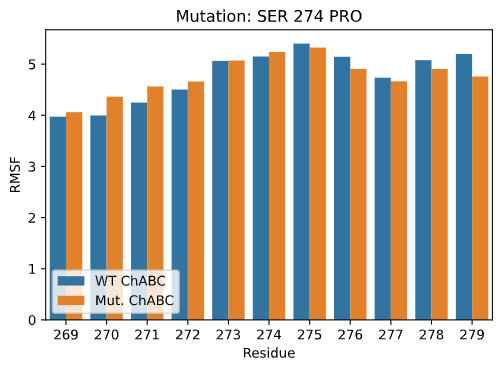
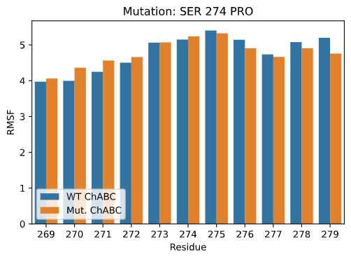
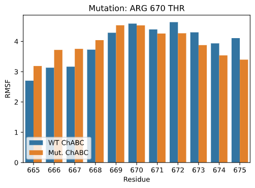
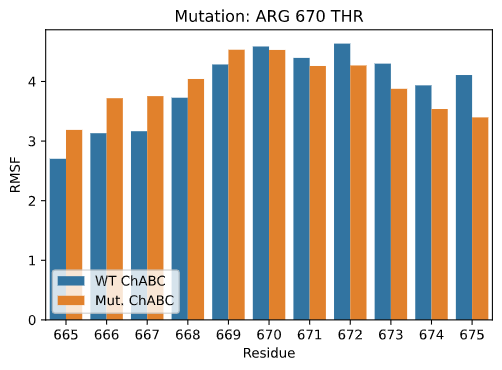

Molecular simulation
Introduction
This year our team decided to look at Chondroitinase ABC (ChABC) as a potential therapeutic agent in SCI. The main use case we are considering is injections along the spinal cord, which have the potential to stimulate neurite regrowth. The main issue with applying ChABC endogenously is that it becomes unstable at normal human physiological temperatures, 37 *C. In order to solve this problem our team collaborated with the Phystech Moscow 2021 iGEM team to computationally model eight mutations on the 1HN0 ChABC structure.Computational Mutation
A paper published by Dr. Marian Hettiaratchi in August of 2020 analysed the impact of directed mutagenesis at certain residue positions of ChABC. We were lucky enough to be provided by Dr. Hettiaratchi with a list of eight positions that were suspected to have a significant impact on the stability of ChABC. We were also given the mutations that might have the best impact at those positions. In order to simulate those mutations in silico we compared the canonical 1HN0 structure (WT) with a homology model of the sequence with the mutated residues (MUT). The homology model was created using MODELLER 10.1. The two structures' sequences and overall structures were positionally identical, with the exception of the eight mutations.Parameters of molecular dynamics simulation
The two structures WT and MUT were sent over to the Phystech Moscow team, who modelled and compared their thermostability in silico for 100 frames at 310.15°K (37°C). The simulation was performed in an explicit solvent that had been equilibrated for charge, pressure and temperature using the “c36m” forcefield and supporting ensembles. A plot of the RMSD values of the wild-type ChABC measured over a hundered 1 second frames. The values are separated based on whether the values were gathered from the sidechains or the backbone of the protein model.
A plot of the RMSD values of the wild-type ChABC measured over a hundered 1 second frames. The values are separated based on whether the values were gathered from the sidechains or the backbone of the protein model.
 A plot of the RMSD values of the mutated ChABC measured over a hundered 1 second frames. The values are separated based on whether the values were gathered from the sidechains or the backbone of the protein model.
A plot of the RMSD values of the mutated ChABC measured over a hundered 1 second frames. The values are separated based on whether the values were gathered from the sidechains or the backbone of the protein model.
Analysis of total results by RMSD
In Figure 1 we can see the protein structures of WT and MUT deviating over time until they stabilise around fifteen frames after the beginning of the modelling. The deviation is measured using Root Mean Square Deviation. To better understand the results, we converted the data into a distribution curve that would show if we improved the RMSD over the length of time of simulation. Figure 2, shows those distributions. According to the data shown, the mutations were overall successful. The backbone RMSD for WT was 2.25 with a maximum of 3.57, while for MUT it was 1.88 with a maximum of 2.57 units. The sidechain distribution did not significantly change. However, the RMSD scores for the whole protein did change from 2.25 with maximum 3.57 for WT and 1.88 with maximum 2.57 for MUT. The fact that the values for the backbone and the total change in RMSD are the same to three significant figures suggests that the improvement of backbone stability plays a key role in the overall stability of the protein.
 A comparison between the distributions for the frames of the backbone RMSD values of the wild-type and mutated ChABC protein models. The difference was statistically significant (p = 2.6e-9)
A comparison between the distributions for the frames of the backbone RMSD values of the wild-type and mutated ChABC protein models. The difference was statistically significant (p = 2.6e-9)
 A comparison between the distributions for the frames of the sidechain RMSD values of the wild-type and mutated ChABC protein models. The difference was not statistically significant (p = 0.6)
A comparison between the distributions for the frames of the sidechain RMSD values of the wild-type and mutated ChABC protein models. The difference was not statistically significant (p = 0.6)
 A comparison between the distributions for the frames of the total RMSD values of the wild-type and mutated ChABC protein models. The difference was statistically significant (p = 2.6e-9)
A comparison between the distributions for the frames of the total RMSD values of the wild-type and mutated ChABC protein models. The difference was statistically significant (p = 2.6e-9)
 A comparison between the distributions of all the protein residues based on RMSF between the wild-type and mutated ChABC protein models. The difference was statistically significant (p = 1.1e-10)
A comparison between the distributions of all the protein residues based on RMSF between the wild-type and mutated ChABC protein models. The difference was statistically significant (p = 1.1e-10)
Analysis of total results by Rgyr and RMSF
Two further ways the WT and MUT structures were analysed was through measuring the Radius of Gyration (Rgyr) for the whole protein over the modelling time and the Root Mean Square Flexibility (RMSF) of each residue. In Figure 3 we can see distribution plots for the values of those measurements. Overall, they also show significant positive improvement in stability. The mean Radius of Gyration went down from 34.79 to 34.51 with noticeable decrease in the maximum from 35.58 to 35.06 units. The RMSF values showed a decrease from 4.87 to 4.44 on average and 12.6 to 7.6 at the maximum. The latter part of this result shows that the mutations managed to greatly improve the most unstable regions in the protein.

 



 


Analysis of the local effect of mutations by RMSF
In Figure 4 we can see each of the mutations and how they affected the RMSF value at their own position and also the positions surrounding them. The effects can be split into three broad categories. ALA228LYS, ASN288ASP, SER343ASN, GLN 781 GLU are obvious improvements in the rigidity of the structure. SER274PRO and ARG670THR had what can be described as a variable effect. In the N-terminal direction the protein lost rigidity, which it gained in the C-terminal direction. LYS194GLU and LYS654ASP seem to have had an increase of flexibility. However, what also needs to be considered is not only the residues surrounding the mutation on the amino-acid chain, but also the residues that come into contact with it in three dimensional space. The massively decreased maximum mentioned in the section above was likely due to precisely LYS194GLU. Residue 194 sits opposite THR112. In the WT structure the RMSF value for the latter is 12.6, whereas in the MUT structure it is only 6.6. This decrease is best attributed to the effects of the mutation on the rigidity of the structure. Therefore, there was a slight increase in RMSF locally, it contributed to stabilising another area much more.
Conclusion
Overall, the results of the computer simulation of the combined effect of these eight mutations proved to be a moderate success. While it did not provide massive increases to the average stability of the whole 1HN0 structure, it did show possible solutions for several unstable local regions. It is also a good proof of concept that such an approach can provide valuable insight into the compound effect of several mutations.